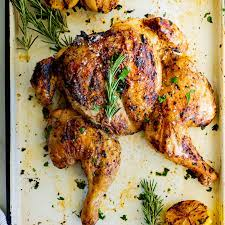

Spatchcock Chicken

Spatchcocking makes for a bird with super crisp skin and moist meat, in about half the time it takes to roast a whole bird.
Ingredients
- One whole chicken
- Salt
- Tarragon
- Paprika
- Black Pepper
- Olive Oil
- Lemons
Directions
- Preheat oven to 450 degrees F (230 degrees C). Line a large rimmed baking sheet with foil.
- Place chicken, breast side down, on a work surface. Starting at the tail end, cut along both sides of backbone with kitchen shears. Remove backbone. Grabbing hold of both sides of the chicken, open it like a book. Turn breast side up. Push down on each side of breast with your hands until you hear it crack. Flatten chicken and transfer to one short end of the prepared baking sheet. Repeat with the second chicken.
- Combine salt, tarragon, paprika, and pepper in a small bowl. Stir in oil. Run your fingers under chicken skin and rub tarragon paste under skin. Slide lemon slices under skin, in a single layer.
- Roast until skin is crisp and an instant-read thermometer inserted into thickest part of breast reads 165 degrees F, about 35 minutes. Let stand 5 minutes before cutting each chicken into 8 pieces.